Elinizdeki dergi, MATRO'yu ilk kez tanıyacak bir kurum için hazırlandı. Kim olduğumuzu, neler ürettiğimizi, bu üretimin arkasındaki insanları ve desteğinizin nereye dönüşeceğini tek bir yerde, abartısız anlatmak istedik.
2013'te Bursa Teknik Üniversitesi'nde kurulan topluluğumuz bugün hava, kara, deniz ve su altı araçlarından endüstriyel robotiğe, haberleşmeden enerji teknolojilerine uzanan on üç proje takımını tek bir atölyede buluşturuyor. Her yıl yüzlerce yeni üye eğitim kamplarından geçiyor; bir kısmı sezon sonunda bir aracın elektronik kartını tasarlıyor, bir kısmı yarışma sahasında o aracı yönetiyor.
Bu üretim, sponsorlarımızın malzeme, hizmet, lisans ve nakit desteğiyle mümkün oluyor. Dergideki her rakam sitemizde yayımladığımız kayıtlardan hesaplandı; her fotoğraf kendi ekiplerimize ait.
2026–2027 sezonunda aynı yolu sizinle yürümek isteriz.
MATRO Yönetim Kurulu
Turkish Technic Workshop, BTÜ Mavi Salon, Mart 2026
Biz kimiz
13 yıldır atölyedeyiz.
Bursa Teknik Üniversitesi bünyesinde 2013 yılında kurulan Makine Teknolojileri Robot ve Otomasyon Topluluğu (MATRO), ülkemizin "Milli Teknoloji Hamlesi" hedefinin ışığında, teknoloji alanındaki ilerleyişte pay sahibi olmak için çalışmalarını sürdüren bir öğrenci topluluğudur.
Başta insansız hava araçları, sualtı robotları, kara ve deniz araçları, hava savunma sistemleri, kablosuz haberleşme, çevre-enerji teknolojileri ve akıllı sistemler olmak üzere farklı disiplinlerde projeler geliştiriyor; üyelerimize pratik mühendislik deneyimi kazandırarak onları profesyonel hayata hazırlıyoruz.
LUNA İKA ekibi TEKNOFEST final alanında
Vizyon
Ülkemizin yarınlarını kuracağının bilincinde, mühendis adaylarını yetiştirmenin öneminin farkındalığı içerisinde, "daima gelişmek" hedefiyle teknolojik alanlardaki çalışmalarını sürdürerek; inandıkları ilkeler doğrultusunda yaptıklarıyla anılan, geleceğin teknolojilerine yön veren ve topluma örnek olan bir topluluk olmaktır.
Misyon
Robotik, havacılık, savunma, çevre-enerji ve akıllı sistem teknolojileri alanlarında; gereksinimler doğrultusunda yenilikçi ve özgün fikirler üretmektir. Faaliyet gösterdiği disiplinlerde başarılar elde ederek Türkiye'nin teknolojik alanda dışa bağımlılığını azaltmasına katkıda bulunmaktır.
01
İnovasyon ve Yaratıcılık
Sürekli yeni fikirlerin peşinde koşar, kalıpların dışında düşünür, karşılaştığımız problemlere özgün ve uygulanabilir çözümler üretiriz.
02
Takım Çalışması ve İşbirliği
Başarının, farklı yeteneklerin ve fikirlerin bir araya geldiği uyumlu bir takım ruhuyla mümkün olduğuna inanırız.
03
Sürekli Öğrenme ve Gelişim
"Daima gelişmek" ilkesiyle bilgilerimizi güncel tutmayı ve yaşam boyu öğrenme felsefesini benimseriz.
04
Milli Bilinç ve Sorumluluk
Projelerimizde yerli ve milli çözümlere öncelik vererek ülkemizin teknolojik bağımsızlığına hizmet ederiz.
2013kuruluş yılı
13proje takımı
50kayıtlı derece
7birincilik
Yarışma alanında ZEMHERİ ekibi; takım kıyafetlerinde sponsor logoları
Tarihçe
2013'ten bugüne
2013
MATRO kuruldu
Bursa Teknik Üniversitesi bünyesinde Makine Teknolojileri Robot ve Otomasyon Topluluğu kuruldu. Aynı yıl LAGARİ adlı insansız hava aracımızla Future Flight Design yarışmasında Dünya 2.si olduk.
2019
İlk TEKNOFEST dereceleri
Tarım Teknolojileri'nde Türkiye 3.lüğü ve İnsansız Sualtı Sistemleri'nde Türkiye 7.liği kazanıldı.
2020
Uçan Araba'da Türkiye şampiyonluğu
TEKNOFEST Baykar Uçan Araba kategorisinde Türkiye 1.liği elde edildi.
2021
Uluslararası arenaya açılım
Renault Twizy Contest'te Dünya 4.lüğü ve Türkiye 1.liği; TEKNOFEST'te üç ayrı kategoride derece.
2022
Dünya finali
Singapur SAUVC Otonom Sualtı Aracı yarışmasında dünya finalisti olundu.
2023
Girişimcilik başarısı
INNOSENS Robot Teknolojileri ile TEKNOFEST T3 Girişimcilik Yarışması'nda Türkiye 1.liği kazanıldı.
2024
Yapay zekâ ve uzay
NASA Space Apps Challenge Bölge 1.liği ve GDG Yapay Zekâ Hackathonu Türkiye 1.liği elde edildi.
2025
Altı kategoride birden finalde
MATROVER ile İnsansız Kara Aracı Türkiye 3.lüğü; Çevre ve Enerji'de Türkiye 7.liği, Sanayide Dijital'de Türkiye 8.liği, Hava Savunma'da rapor 3.lüğü ve sualtı, deniz, kara araçlarında finalistlikler.
2026
Sekiz takım TEKNOFEST finalinde
ASHİNA, LUNA İKA, LODOS, PRUSA, ZEMHERİ, MATRİS, PUSULA ve ANDROMEDA takımlarımız TEKNOFEST 2026 finallerinde Türkiye'nin dört bir yanında üniversitemizi temsil etti. Su Altı Roket kategorisine ilk kez katılan ZEMHERİ ilk yılında finalist oldu; Genç Ticaret Elçileri Yarışması'nda birincilik kazanıldı.
“Topluluğumuz 2020-2025 döneminde 35 takımı ile ilk 10'a girdi, 342 yarışmacı ile finalist oldu ve 22 derece ile özel ödül kazandı. 2026 sezonunda ise sekiz takımımız TEKNOFEST finallerinde üniversitemizi temsil etti.”
Rakamlarla MATRO
Emeğin karşılığı.
50kayıtlı derece2013–2026
7birincilikTürkiye ve bölge
5uluslararası başarıdünya ve bölge dereceleri
342finalist yarışmacı2020–2025
35ilk 10'a giren takım2020–2025
8TEKNOFEST finalisti2026 sezonu
2025–2026 sezonu
45faaliyet
2.034toplam katılım
500okul öğrencisine ulaşıldı
75.000+ TLKardeş Okul desteği
Kapak konusu
2026: 8 takım finalde
TEKNOFEST 2026 sezonunda 8 takımımız Türkiye'nin dört bir yanındaki final alanlarında üniversitemizi temsil etti. Su Altı Roket kategorisine ilk kez katılan ZEMHERİ, ilk yılında finalist oldu.
ASHİNAUluslararası İnsansız Hava AraçlarıTEKNOFEST — TÜBİTAK
LUNA İKAİnsansız Kara AracıTEKNOFEST — ASELSAN
LODOSİnsansız Deniz AracıTEKNOFEST — ASELSAN
PRUSAİnsansız Sualtı AracıTEKNOFEST — ASELSAN
ZEMHERİSu Altı Roket YarışmasıTEKNOFEST — ROKETSAN
MATRİSSürü İnsansız Hava AracıTEKNOFEST — HAVELSAN
ANDROMEDAAkıllı Fabrika Sistemleri ProgramlamaTEKNOFEST — Mesleki Yetenek Yarışması
MalatyaASHİNA
MardinLUNA İKA
DiyarbakırPUSULA
GaziantepMATRİS
Mavi VatanLODOS · PRUSA · ZEMHERİ
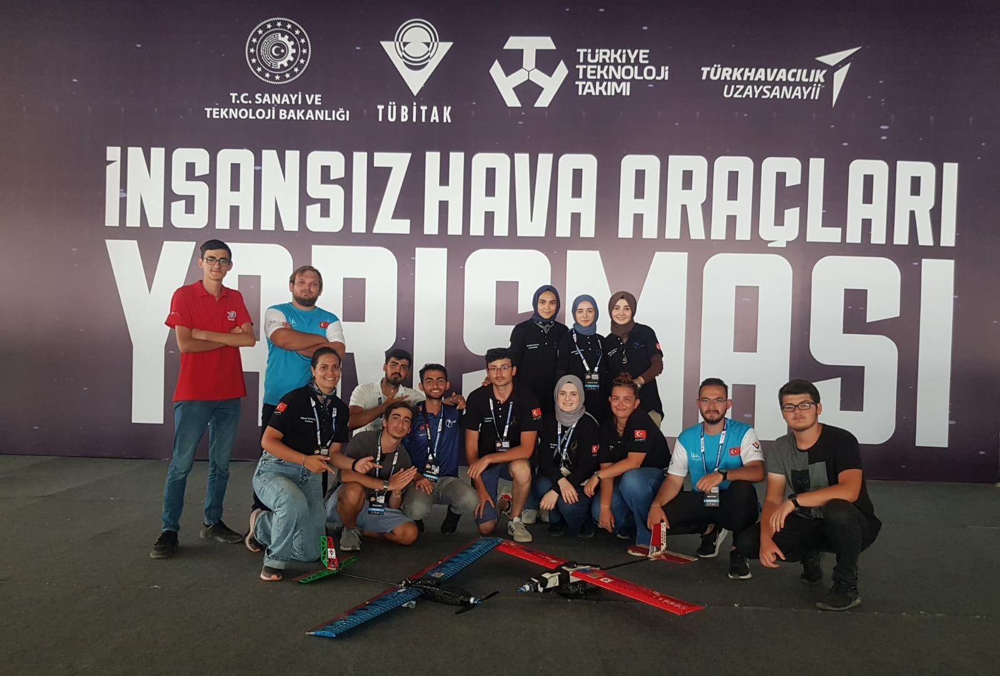
01
Bölüm
Takımlarımız
13 proje takımı, onlarca alt ekip. Hava, kara, deniz ve su altı araçlarından endüstriyel robotiğe, haberleşmeden enerjiye; hepsi aynı atölyede, Özdemir Bayraktar TEKNOFEST Atölyesi'nde üretiyor.
ASHİNAİnsansız Hava Araçları Sistemleri
MATROVER & LUNAİnsansız ve Tarımsal İnsansız Kara Araçları
İDAİnsansız Deniz Aracı
İSSİnsansız Su Altı Sistemleri
ZEMHERİSu Altı Roket Sistemleri
MATRİSSürü İnsansız Hava Aracı
SANAYİDE DİJİTAL TEKNOLOJİLEREndüstri 4.0 ve Dijital İkiz
GÖKSAVHava Savunma Sistemleri (ASHİNA-H)
ALHAZENÇevre ve Enerji Teknolojileri
BÜRKÜTUçan Araba Simülasyonu
ÇAĞRIKablosuz Haberleşme
GİRİŞİMCİLİK VE İNOVASYONÜrünleşme ve Teknoloji Girişimciliği
ASHİNA İNOVASYONTarım Teknolojileri
2026 Finalisti
Havacılık
ASHİNA
İnsansız Hava Araçları Sistemleri
Alt takımlar ve araçlar
LAGARİ · FIRAT · YELKOVAN
Instagram
@ashinatechnology
Adını Göktürk Kağanlığı'nın kurucu Türk soyundan alan ASHİNA, topluluğumuzun en köklü ve en geniş kapsamlı proje takımıdır. LAGARİ, FIRAT ve YELKOVAN alt takımlarıyla farklı İHA kategorilerinde yarışmaktadır.
Ne yapıyoruz?
Takım, "Tamamen Otonom; Havadan Tespit, Karadan İmha" senaryosunu uçtan uca hayata geçirdi. Bu senaryo kapsamında hava aracı hedefi otonom olarak tespit ediyor, konum bilgisini yer istasyonuna iletiyor ve kara birimi imhayı gerçekleştiriyor.
Öne çıkan teknolojiler
Kendi imkânlarımızla tasarlanıp üretilen fırçasız DC motor
Akım sınırlayıcı devre tasarımı
2 eksenli elektromanyetik atış birimi
Derin öğrenme tabanlı hedef tespit ve takip algoritmaları
5 farklı haberleşme sistemini tek noktadan yöneten, takım tarafından tasarlanmış yer kontrol istasyonu
Güncel durum
Takım, TEKNOFEST 2026 TÜBİTAK Uluslararası İnsansız Hava Araçları Yarışması'nda Türkiye finalisti olarak Malatya'da üniversitemizi temsil etmiştir.
2026 Finalisti
Kara Araçları
MATROVER & LUNA
İnsansız ve Tarımsal İnsansız Kara Araçları
Alt takımlar ve araçlar
MATROVER · LUNA · LUNA İKA · LUNAROV · MATROBOT · YAKLI · BTÜ İKA · ROVER TEAM · SEKSENOL · TİKA
Tarımsal İnsansız Kara Araçları çatısı altında, topluluğumuzun en uzun soluklu proje geleneği yürütülmektedir. 2019'dan bu yana her yıl TEKNOFEST'te derece kazanan bu TİKA çatısı; MATROVER, LUNA, LUNA İKA, LUNAROV, MATROBOT, YAKLI, BTÜ İKA, ROVER TEAM ve SEKSENOL alt takımlarını ve araçlarını barındırır.
Teknik odak
Otonom arazi sürüşü ve engel algılama
SLAM tabanlı haritalama, rota planlama ve sıra takibi
Ekim, ilaçlama ve hasat için robotik kol ve aktüatör sistemleri
Görüntü işleme ile yabancı ot / bitki sağlığı tespiti
Başarı geçmişi
Takımlarımız 2019'dan itibaren Tarım Teknolojileri, Tarımsal İnsansız Kara Aracı ve İnsansız Kara Aracı kategorilerinde altı ayrı derece kazanmıştır. TEKNOFEST 2025 ASELSAN İnsansız Kara Aracı Yarışması'nda MATROVER ekibi Türkiye üçüncüsü, LUNA ekibi finalist oldu. 2026 sezonunda ise LUNA İKA ekibimiz aynı kategoride Türkiye finalisti olarak Mardin'de yarıştı.
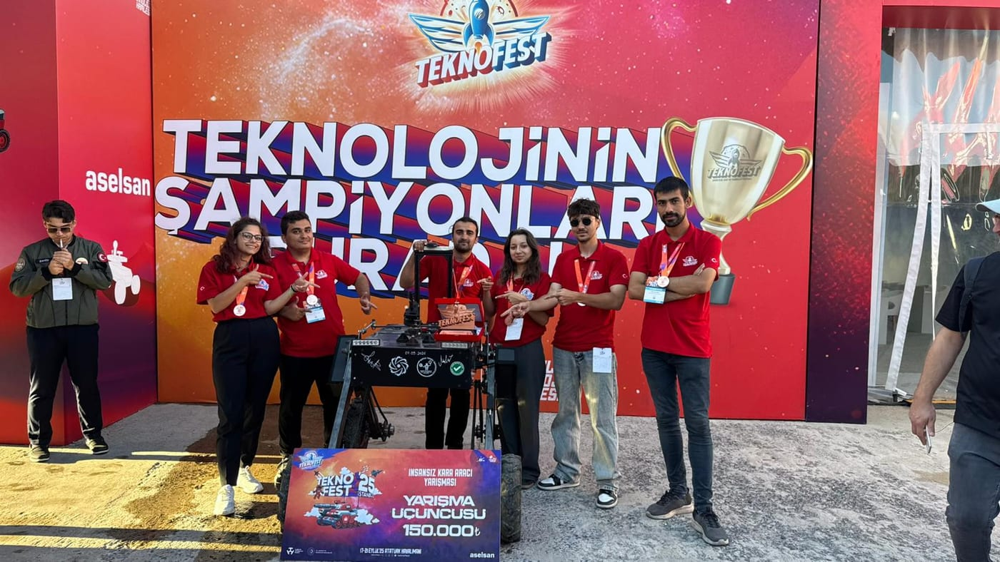
2026 Finalisti
Deniz Araçları
İDA
İnsansız Deniz Aracı
Alt takımlar ve araçlar
LODOS
Instagram
@lodos.tech
İnsansız Deniz Aracı takımı, su üstü platformlarında otonom seyir ve görev kabiliyeti geliştirmeye odaklanır.
Çalışma alanları
Deniz üstü otonomi ve engelden kaçınma
Rotalandırma, seyir planlama ve dalga koşullarında stabilite
Keşif, gözetleme ve veri toplama yükleri
Başarı
Takım, TEKNOFEST 2025 ASELSAN İnsansız Deniz Aracı Yarışması'nda Türkiye finalisti olmuştur. 2026 sezonunda LODOS ekibimiz aynı kategoride yeniden Türkiye finalisti oldu.
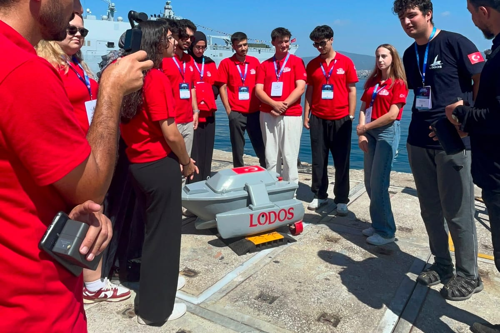
2026 Finalisti
Sualtı Sistemleri
İSS
İnsansız Su Altı Sistemleri
Alt takımlar ve araçlar
PRUSA · BTU AUV · BTU DALAY
Instagram
@prusateam
İnsansız Su Altı Sistemleri takımı, otonom sualtı araçlarının (AUV) mekanik, elektronik ve yazılım katmanlarını uçtan uca geliştirir.
Teknik odak
Basınca dayanıklı gövde ve sızdırmazlık tasarımı
İtki sistemleri ve derinlik/yönelim kontrolü
Bulanık ortamda sualtı görüntü işleme ve görev otonomisi
Yerli otonom kontrol kartı, batarya sistemi ve gömülü yazılım
Uluslararası deneyim
Takım, Singapur SAUVC (Singapore AUV Challenge) 2022'de dünya finalisti olarak uluslararası arenada ülkemizi temsil etmiştir. TEKNOFEST ASELSAN İnsansız Sualtı Sistemleri yarışmasında 2024 ve 2025 yıllarında finale kalmış; 2026 sezonunda PRUSA ekibimizle yeniden Türkiye finalisti olmuştur.
Yerli çözümler
Aracın otonom kontrol kartı, batarya sistemi ve kontrol yazılımı takım tarafından geliştirilmektedir.
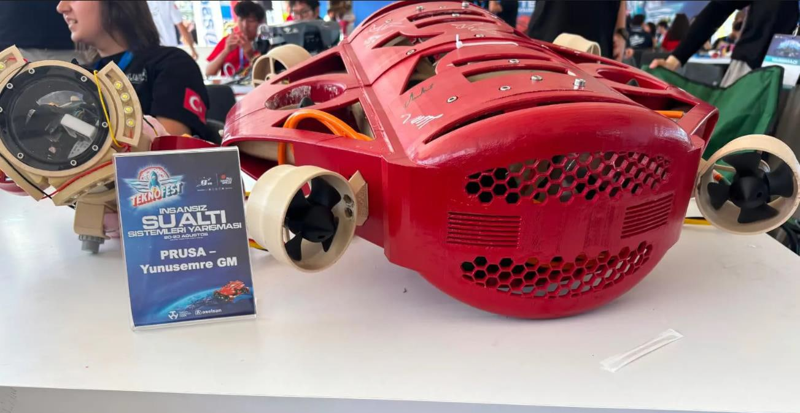
2026 Finalisti
Sualtı Sistemleri
ZEMHERİ
Su Altı Roket Sistemleri
Alt takımlar ve araçlar
SARA
ZEMHERİ, TEKNOFEST bünyesinde ROKETSAN tarafından bu yıl ikinci kez düzenlenen Su Altı Roket Yarışması için topluluğumuz çatısı altında kurulan takımımızdır. Arşivimizde SARA adıyla geçen araç, bu ekibin su altı roket prototiplerinden biridir.
Teknik odak
Su altında ateşlenen roketin gövde, burun konisi ve kanatçık tasarımı
İtki sistemi seçimi ve su altı ateşleme düzeneği
Basınç dayanımı, sızdırmazlık ve malzeme seçimi
Atış sonrası menzil, derinlik ve yörünge verilerinin toplanması
İlk sezon, ilk finalist
Takım, ilk katılım yılında Türkiye finalisti olma başarısı gösterdi. Görev aşamalarındaki performansıyla hakem heyetinin takdirini toplayan ekibimiz, önümüzdeki sezon için hedefini daha yukarıya taşıdı.
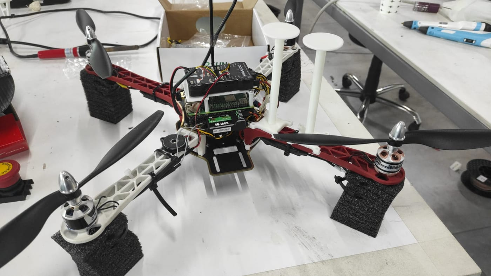
2026 Finalisti
Havacılık
MATRİS
Sürü İnsansız Hava Aracı
Alt takımlar ve araçlar
SÜRÜ İHA
Instagram
@btu_matris
MATRİS takımı, birden fazla insansız hava aracının merkezi ve dağıtık mimarilerle koordineli hareket etmesi üzerine çalışır.
Teknik odak
Sürü halinde otonom uçuş ve formasyon koruma
Çoklu araç arası haberleşme ve çakışma önleme
Görev dağıtım ve yeniden planlama algoritmaları
Başarı
TEKNOFEST 2024 HAVELSAN Sürü İHA Yarışması'nda Türkiye 9.su olarak finalde yer almıştır. 2026 sezonunda da Türkiye finalisti olarak Gaziantep'te yarışmıştır.
2026 Finalisti
Dijital Teknolojiler
SANAYİDE DİJİTAL TEKNOLOJİLER
Endüstri 4.0 ve Dijital İkiz
Alt takımlar ve araçlar
PUSULA · ANDROMEDA
Instagram
@pusula_takim
Sanayide Dijital Teknolojiler takımı, üretim hatlarının dijitalleşmesine yönelik uygulamalar geliştirir.
Çalışma alanları
Endüstri 4.0 mimarileri ve akıllı üretim
IoT sensör ağları ve veri toplama altyapıları
Dijital ikiz (digital twin) modelleri ve kestirimci bakım
Başarı
Takım, TEKNOFEST 2021 Sanayide Dijital Teknolojiler kategorisinde Türkiye 3.sü, 2025 yılında Türkiye 8.si olmuş; 2024 yılında da finalde yer almıştır.
2026 sezonunda PUSULA ekibimiz KOSGEB Sanayide Robotik Uygulamalar Yarışması'nda Diyarbakır'da, ANDROMEDA ekibimiz ise Mesleki Yetenek Yarışması Akıllı Fabrika Sistemleri Programlama kategorisinde Türkiye finalisti oldu.
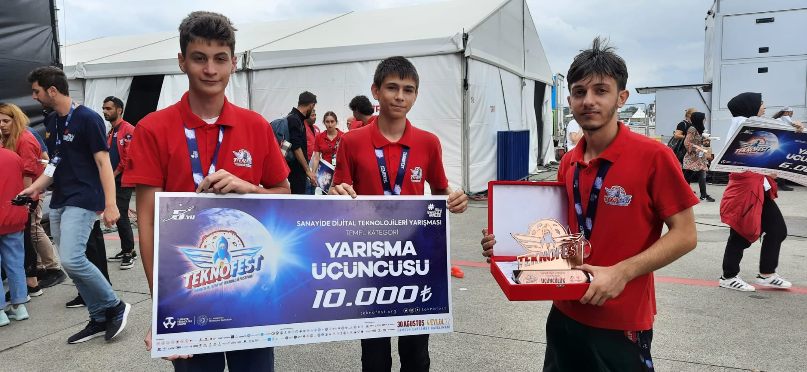
Savunma
GÖKSAV
Hava Savunma Sistemleri (ASHİNA-H)
TEKNOFEST 2025 Hava Savunma Sistemleri yarışmasında rapor aşamasında Türkiye 3.sü olan, ASHİNA kökenlerinden gelen GÖKSAV (ASHİNA-H) hava savunma takımımız.
TEKNOFEST 2025 ASELSAN Hava Savunma Sistemleri — Rapor 3.sü (GÖKSAV)
Hava savunma sistem entegrasyonu
Radar ve sensör takibi
Bertaraf mekanizmaları
Çevre & Enerji
ALHAZEN
Çevre ve Enerji Teknolojileri
TEKNOFEST 2025 Çevre ve Enerji Teknolojileri yarışmasında Türkiye 7.si olan, sürdürülebilir mühendislik çözümleri üreten takımımız.
TEKNOFEST 2025 SANKO Çevre ve Enerji Teknolojileri — Türkiye 7.si
Yenilenebilir enerji sistemleri
Enerji depolama ve verimliliği
Geri dönüşüm ve sıfır atık teknolojileri
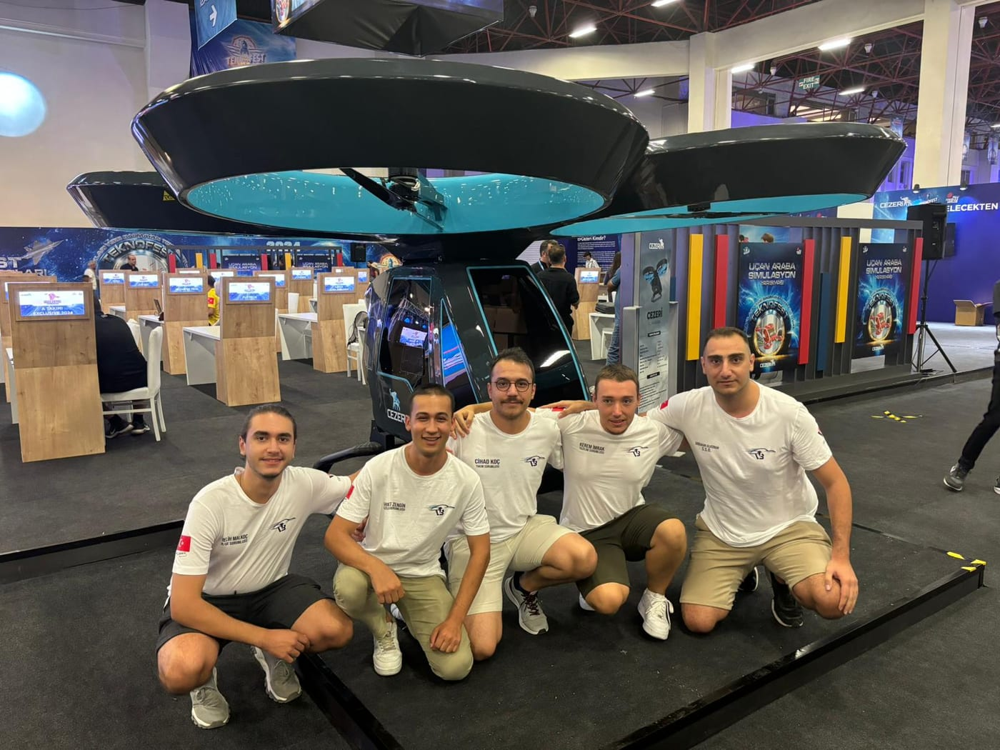
Simülasyon & Otonomi
BÜRKÜT
Uçan Araba Simülasyonu
1547 takım arasından finale kalan ve "En İyi Takım Ruhu" ödülünü kazanan otonom uçuş simülasyon takımımız.
TEKNOFEST 2024 Uçan Araba Simülasyon — Türkiye 31.si (1547 takım arasından finalist)
TEKNOFEST 2024 — En İyi Takım Ruhu Ödülü
TEKNOFEST 2022 Cezeri Uçan Araba — En İyi Performans Ödülü & Türkiye 4.sü
Renault Twizy Contest 2021 — Dünya 4.sü, Türkiye 1.si ve 2.si
TEKNOFEST 2020 BAYKAR Uçan Araba — Türkiye 1.si
Otonom uçuş simülasyonları
Kalman filtresi tabanlı sensör füzyonu
Python tabanlı kontrol algoritmaları
Haberleşme
ÇAĞRI
Kablosuz Haberleşme
Karıştırma etkisi altındaki frekans dinamiğini yöneterek veriyi başarıyla ileten, 397 takım arasından Türkiye 6.sı olan haberleşme takımımız.
TEKNOFEST 2024 Kablosuz Haberleşme (ULAK) — Türkiye 6.sı (397 takım arasından)
Atölyede doğan fikirleri ürüne ve şirkete dönüştüren; TEKNOFEST Girişimcilik Türkiye 1.si INNOSENS'i çıkaran ekibimiz.
Türkiye Uzay Ajansı Astro Hackathon 2026 — 5.lik (SCENDERS)
Advance-Up Hackathon 2025 — Türkiye 3.sü (SYNTAX)
TEKNOFEST 2023 T3 Girişimcilik — Türkiye 1.si (INNOSENS Robot Teknolojileri, 75.000 TL)
GDG Yapay Zekâ Hackathonu 2024 — Türkiye 1.si
NASA Space Apps Challenge 2024 — Bölge 1.si
Teknoloji girişimciliği
Ürünleşme ve iş modeli tasarımı
Hackathon ve fikir yarışmaları
Tarım Teknolojileri
ASHİNA İNOVASYON
Tarım Teknolojileri
Tarım sektörüne yönelik yenilikçi, akıllı ve sürdürülebilir teknolojik çözümler geliştiren araştırma odaklı takımımız.
Akıllı tarım çözümleri
Sürdürülebilir üretim teknolojileri
Araştırma ve proje geliştirme
Arşiv
50 derece, 7 birincilik
Yıl
Yarışma
Kategori
Derece
Takım
2026
TEKNOFEST — TÜBİTAK
Uluslararası İnsansız Hava Araçları
Türkiye Finalisti
ASHİNA
2026
TEKNOFEST — ASELSAN
İnsansız Kara Aracı
Türkiye Finalisti
LUNA İKA
2026
TEKNOFEST — ASELSAN
İnsansız Deniz Aracı
Türkiye Finalisti
LODOS
2026
TEKNOFEST — ASELSAN
İnsansız Sualtı Aracı
Türkiye Finalisti
PRUSA
2026
TEKNOFEST — ROKETSAN
Su Altı Roket Yarışması
Türkiye Finalisti
ZEMHERİ
2026
TEKNOFEST — HAVELSAN
Sürü İnsansız Hava Aracı
Türkiye Finalisti
MATRİS
2026
TEKNOFEST — KOSGEB
Sanayide Robotik Uygulamalar
Türkiye Finalisti
PUSULA
2026
TEKNOFEST — Mesleki Yetenek Yarışması
Akıllı Fabrika Sistemleri Programlama
Türkiye Finalisti
ANDROMEDA
2026
Genç MÜSİAD — Genç Ticaret Elçileri
Girişimcilik
1.lik
GİRİŞİMCİLİK
2026
Türkiye Uzay Ajansı — Astro Hackathon
Uzay Teknolojileri
5.lik
SCENDERS
2025
Advance-Up Hackathon
Girişimcilik
3.lük
SYNTAX
2025
TEKNOFEST — ASELSAN
Hava Savunma Sistemleri
Rapor 3.sü
GÖKSAV
2025
TEKNOFEST — ASELSAN
İnsansız Deniz Aracı
Türkiye Finalisti
İDA
2025
TEKNOFEST — ASELSAN
İnsansız Kara Aracı
Türkiye 3.sü
MATROVER
2025
TEKNOFEST — ASELSAN
İnsansız Kara Aracı
Türkiye Finalisti
LUNA
2025
TEKNOFEST — ASELSAN
İnsansız Sualtı Aracı
Türkiye Finalisti
İSS
2025
TEKNOFEST
Sanayide Dijital Teknolojiler
Türkiye 8.si
PUSULA
2025
TEKNOFEST — SANKO
Çevre ve Enerji Teknolojileri
Türkiye 7.si
ALHAZEN
2024
Google Developers Group
Yapay Zekâ Hackathonu
Türkiye 1.si
GİRİŞİMCİLİK
2024
NASA Space Apps Challenge
Uzay Sorunları Hackathonu
Bölge 1.si
GİRİŞİMCİLİK
2024
TEKNOFEST
Sanayide Dijital Teknolojiler
Türkiye Finalisti
PUSULA
2024
TEKNOFEST — ASELSAN
İnsansız Sualtı Aracı
Türkiye Finalisti
İSS
2024
TEKNOFEST — BAYKAR
Uçan Araba Simülasyonu
En İyi Takım Ruhu Ödülü & 31.lik
BÜRKÜT
2024
TEKNOFEST — Bilişim Vadisi
Tarımsal İnsansız Kara Aracı
Türkiye 5.si
MATROBOT
2024
TEKNOFEST — HAVELSAN
Sürü İnsansız Hava Aracı
Türkiye 9.su
MATRİS
Yıl
Yarışma
Kategori
Derece
Takım
2024
TEKNOFEST — TÜBİTAK
Uluslararası Serbest Görev İHA
Türkiye 19.su
ASHİNA
2024
TEKNOFEST — ULAK
Kablosuz Haberleşme
Türkiye 6.sı
ÇAĞRI
2023
TEKNOFEST — Bilişim Vadisi
Tarımsal İnsansız Kara Aracı
Türkiye Finalisti
YAKLI
2023
TEKNOFEST — T3 Girişim
Girişimcilik Yarışması
Türkiye 1.si (75.000 TL)
INNOSENS
2023
TEKNOFEST — TÜBİTAK
İnsansız Hava Araçları
En İyi Performans Ödülü
ASHİNA
2022
Singapore SAUVC
Autonomous Underwater Vehicle
Dünya Finalisti
İSS
2022
TEB
İcat Çıkart Yarışması
Türkiye 3.sü
GİRİŞİMCİLİK
2022
TEKNOFEST — Cezeri
Uçan Araba
En İyi Performans Ödülü
BÜRKÜT
2022
TEKNOFEST — Cezeri
Uçan Araba
Türkiye 4.sü
BÜRKÜT
2022
TEKNOFEST — TARNET
Tarımsal İnsansız Kara Aracı
Türkiye 5.si
ROVER TEAM
2022
TEKNOFEST — TÜBİTAK
İnsansız Hava Araçları
Türkiye 4.sü
ASHİNA
2022
TEKNOFEST — İGA
Akıllı Ulaşım
En İyi Sunum Ödülü
2021
Bursa Büyükşehir Belediyesi
Genç Zihinler
Türkiye 1.si
GİRİŞİMCİLİK
2021
France — Renault Twizy Contest
Mobility Challenge
Dünya 4.sü
BÜRKÜT
2021
Renault Twizy Contest
Mobility Challenge
Türkiye 1.si — En İyi Takım Ödülü
BÜRKÜT
2021
Renault Twizy Contest
Mobility Challenge
Türkiye 2.si — En İyi İletişim Ödülü
BÜRKÜT
2021
TEKNOFEST
Sanayide Dijital Teknolojiler
Türkiye 3.sü
PUSULA
2021
TEKNOFEST — ASELSAN
İnsansız Su Altı Sistemleri
Türkiye Finalisti
İSS
2021
TEKNOFEST — Bilişim Vadisi
Tarımsal İnsansız Kara Aracı
Türkiye 5.si
MATROBOT
2021
TEKNOFEST — TÜBİTAK
İnsansız Hava Araçları
Türkiye 3.sü
ASHİNA
2020
Italian Design Days
FIAT Design Contest
Türkiye 2.si
BÜRKÜT
2020
TEKNOFEST — BAYKAR
Uçan Araba
Türkiye 1.si
BÜRKÜT
2019
TEKNOFEST — ASELSAN
İnsansız Su Altı Sistemleri
Türkiye 7.si
İSS
2019
TEKNOFEST — TARNET
Tarım Teknolojileri
Türkiye 3.sü
BTÜ İKA
2013
Future Flight Design (FFD'13)
İnsansız Hava Aracı Tasarımı
Dünya 2.si
LAGARİ
Kaynak: btumatro.com/basarilarimiz. Vurgulu satırlar topluluğun öne çıkan başarılarıdır.
Atölye ve eğitim
Her yıl yeniden başlayan okul
Yeni üyelerimize her akademik yıl düzenli olarak sunduğumuz mekanik, elektronik ve yazılım eğitim programımızın 2025-2026 döneminde 61 üyemiz sertifika almaya hak kazandı.
Mekanik
SolidWorks, CATIA
Eklemeli imalat (3D baskı)
Talaşlı imalat
Atölye kullanımı
Elektronik
Elektronik devre temelleri
Robotik elektronik
Devre kartı tasarımı ve üretimi
Yazılım
Yapay zekâ, algoritma
Görüntü işleme
Gömülü yazılım
Robotik yazılım uygulamaları
Mobil robot imalat ve kontrol
32Ders Saati
61Mezun
%75Devam Şartı
Eğitimler Özdemir Bayraktar TEKNOFEST Atölyesi'nde verilir; mezunlar sezon içinde proje takımlarına katılır.
Turkish Technic Teknik GezisiTurkish Technic, İstanbul
TÜBİTAK MAM Teknik GezisiTÜBİTAK Marmara Araştırma Merkezi
ERTEV – Ermetal Teknik GezisiErmetal Grup Şirketleri, Bursa
HKTM Teknik GezisiHKTM Fabrikası, Gebze
Turkish Technic WorkshopBTÜ E Blok, Mavi Salon
Alp Havacılık Teknik GezisiAlp Havacılık, Eskişehir
GUHEM ZiyaretiGökmen Uzay Havacılık Eğitim Merkezi, Bursa
TUSAŞ Teknik Gezi XLTUSAŞ Tesisleri, Ankara
Tanışma kahvaltısı, Ekim 2025 · 65 katılımcı
Ayrıntılı döküm: MATRO 2025–2026 Faaliyet Raporu.
Toplumsal etki
Yeni nesil mühendisler
500öğrenciye 2025–2026'da ulaştık75.000+ TLKardeş Okul Projesi kapsamında eğitim ve malzeme desteği
Veliköy Mesleki ve Teknik Anadolu LisesiBTÜ Özdemir Bayraktar TEKNOFEST Atölyesi · 80 öğrenci
Yerli Malı Haftası: Milli Araçlarımızı TanıyoruzArmutlu Avukat Necati Toker İlkokulu · 300 öğrenci
Arduino EğitimiUluslararası Murat Hüdavendigar Lisesi · 35 öğrenci
Bursa Büyük Kolej Bilim HaftasıBursa Büyük Kolej · 35 öğrenci
TEKNOFEST Tecrübe Paylaşımı ve Atölye GezisiBTÜ Özdemir Bayraktar TEKNOFEST Atölyesi · 25 öğrenci
Tugay Ciner İlköğretim Okulu Atölye ZiyaretiBTÜ Özdemir Bayraktar TEKNOFEST Atölyesi · 25 öğrenci
Sanayi ağı
Kapısını açan 20 kurum
TUSAŞ, TOGG, ASELSAN, TEI, Turkish Technic, Ermetal, HKTM ve Alp Havacılık gibi kuruluşlara düzenlediğimiz vizyon gezileriyle üyelerimizi sanayi ile buluşturuyoruz.
TUSAŞ (Türk Havacılık ve Uzay Sanayii)
TOGG
Turkish Technic
TÜBİTAK SAGE
TÜBİTAK MAM
TEI (TUSAŞ Motor Sanayii)
Toyota
ASELSAN
Ford Otosan
Borusan Mannesmann
Durmazlar
Ermetal
HKTM (Hidropar Hareket Kontrol Teknolojileri Merkezi)
Alp Havacılık
GUHEM (Gökmen Uzay Havacılık Eğitim Merkezi)
SAHA EXPO
Valeo
IDEF (Uluslararası Savunma Sanayii Fuarı)
Akın Robotics
WIN Eurasia
Ermetal, Aralık 2025HKTM, Mart 2026Alp Havacılık, Mart 2026
Basında biz
Haberlerde MATRO
Ulusal ve yerel basında yer alan projelerimiz, başarılarımız ve etkinliklerimizden bir seçki.
Gündem Bursa · 2024
NASA Space Apps Challenge Bursa'da: Teknoloji ve Uzay Tutkunları Bir Araya Geldi
Anadolu Ajansı · 2021
'Uyumayan atölyeler'de beyin fırtınası yaparak proje üretiyorlar
Milliyet · 2020
Mühendis adayları Fransa'da yarışacak
Anadolu Ajansı · 2020
Mühendis adaylarından iki kişilik elektrikli araç için 'faydalı' mobil tasarımlar
Bursa Teknik Üniversitesi · 2019
BTÜ Öğrencileri Lise ve Ortaokullara Eğitim Robotuyla 'Kodlama' Öğretecek
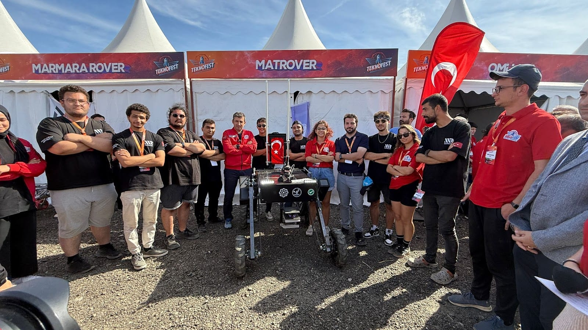
02
Bölüm
Sponsorluk
Desteğiniz; takımlarımızın malzemesine, atölyesine ve eğitimine dönüşür. Markanızla, fikirlerini çalışan sistemlere dönüştüren genç mühendislerin yanında yer alın.
01
Sahada görünürlük
Logonuz TEKNOFEST final alanlarında, yarış araçlarında, takım kıyafetlerinde, fuar standlarında ve kampüs etkinliklerinde; aynı zamanda web sitemizde ve sosyal medya hesaplarımızda yer alır.
02
Genç mühendislerle erken temas
Eğitim kamplarımızdan her yıl yüzlerce öğrenci geçiyor. Sponsorlarımız staj, teknik gezi ve atölye buluşmalarıyla geleceğin mühendis adaylarını üniversite sıralarındayken tanıyor.
03
Yerli teknolojiye katkı
Takımlarımız motorundan kontrol kartına kadar pek çok alt sistemi kendisi tasarlıyor. Desteğiniz doğrudan yerli ve milli teknoloji geliştirme sürecine dönüşüyor.
04
Toplumsal etki
İlkokuldan liseye yüzlerce öğrenciye robotik ve kodlama eğitimi veriyor, Kardeş Okul Projesi ile teknolojiye erişimi kısıtlı okullara malzeme desteği sağlıyoruz.
05
Şeffaf ve resmî süreç
Sponsorluklar Bursa Teknik Üniversitesi Rektörlüğü'ne sunulan resmî form ile kayda geçer; nakit destekler üniversitenin şartlı bağış hesabı üzerinden alınır.
Destek türleri
Desteğiniz nereye dönüşür?
Nakit Destek
Malzeme, üretim ve yarışma katılım giderlerinde doğrudan kullanılır.
Malzeme Desteği
Elektronik komponent, hammadde, kompozit ve mekanik parça temini.
Hizmet Desteği
Lazer kesim, CNC işleme, kalıp, kaplama, lojistik ve barınma desteği.
Ürün / Lisans Desteği
Mühendislik yazılımı lisansı, test cihazı veya ekipman tahsisi.
Harcama kalemleri
01
Malzeme ve üretim
Elektronik komponent, motor, batarya, kompozit ve mekanik parça; lazer kesim, CNC ve 3B baskı işçiliği.
02
Test ve saha
Havuz, deniz ve arazi testleri; prototiplerin tekrar tekrar üretilip denenmesi.
03
Yarışma katılımı
Final alanlarına araç ve ekip ulaşımı, konaklama ve yarışma süresince lojistik.
04
Eğitim ve atölye
Yeni üyeler için eğitim kampları, atölye ekipmanı ve mühendislik yazılımı lisansları.
Nakit destekler üniversitemizin şartlı bağış hesabı üzerinden kayda alınır ve doğrudan topluluğumuzun harcamalarında kullanılır. Hesap bilgilerini ve resmî formu iletişim kurduğunuzda paylaşıyoruz.
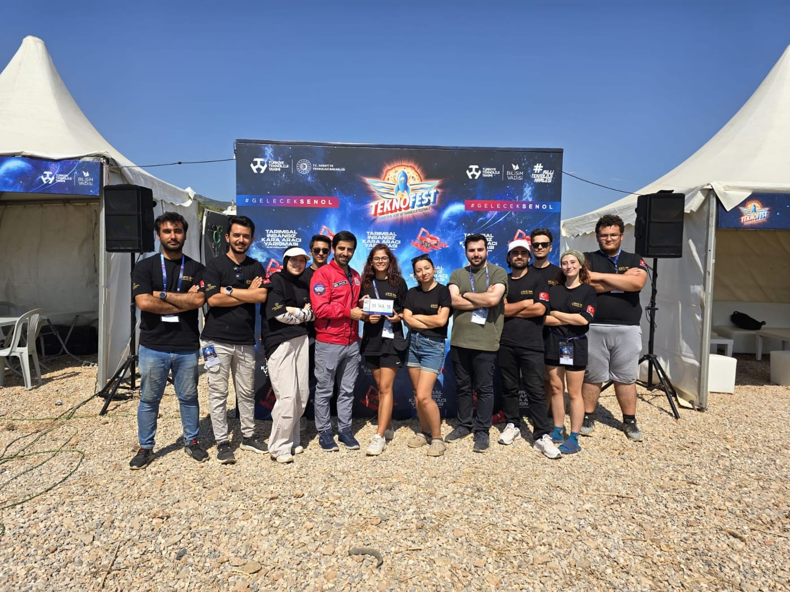
MATROBOT ekibi TEKNOFEST final alanında
Sponsorluk kademeleri
Dört kademe, tek hedef.
Platin
151.000 TL ve üzeri
Yarışma finallerinde BTÜ standının arka fonunda logo
Yarışma alanında ve yarış araçlarında logo
BTÜ web sayfası ve sosyal medya hesaplarında paylaşım
Üniversitenin uygun alanlarında pano, afiş ve görsellerde yıl boyu logo
Broşür ve basılı tanıtım materyallerinde logo
Yarışmacı tişört, bandana vb. giyim malzemelerinde logo
Üniversite içi organizasyonlarda yılda iki kez ücretsiz tanıtım standı
Altın
81.000 TL – 150.000 TL
Yarışma finallerinde BTÜ standının arka fonunda logo
Yarışma alanında ve yarış araçlarında logo
BTÜ web sayfası ve sosyal medya hesaplarında paylaşım
Üniversitenin uygun alanlarında pano, afiş ve görsellerde yıl boyu logo
Broşür ve basılı tanıtım materyallerinde logo
Yarışmacı tişört, bandana vb. giyim malzemelerinde logo
Üniversite içi organizasyonlarda ücretsiz tanıtım standı
Gümüş
41.000 TL – 80.000 TL
Yarışma finallerinde BTÜ standının arka fonunda logo
BTÜ web sayfası ve sosyal medya hesaplarında paylaşım
Üniversitenin uygun alanlarında pano, afiş ve görsellerde yıl boyu logo
Yarışmayla ilgili broşür ve basılı tanıtım materyallerinde logo
Bronz
20.000 TL – 40.000 TL
Yarışma finallerinde BTÜ standının arka fonunda logo
Üniversitenin uygun alanlarında pano, afiş ve görsellerde yıl boyu logo
Broşür ve basılı tanıtım materyallerinde logo
Karşılaştırma
Kademelere göre haklar
Platin151.000 TL ve üzeri
Altın81.000 TL – 150.000 TL
Gümüş41.000 TL – 80.000 TL
Bronz20.000 TL – 40.000 TL
Yarışma finallerinde BTÜ standının arka fonunda logo
Yarışma alanında ve yarış araçlarında logo
–
–
BTÜ web sayfası ve sosyal medya hesaplarında paylaşım
–
Üniversitenin uygun alanlarında pano, afiş ve görsellerde yıl boyu logo
Broşür ve basılı tanıtım materyallerinde logo
Yarışmacı tişört, bandana vb. giyim malzemelerinde logo
–
–
Üniversite içi organizasyonlarda ücretsiz tanıtım standı
Yılda 2 kez
–
–
Kademeler ve sponsor firmaya tanınan haklar, Bursa Teknik Üniversitesi'nin resmî sponsorluk yönergesine göre belirlenmiştir. Tanıtım standlarında satış ve pazarlama yapılamaz. Sponsorluk görsellerinde logo paylaşımları sponsorluk derecesine göre belirlenir.
Logonuz nerede görünür?
Yarışma alanında takım kıyafetlerinde sponsor logolarıTEKNOFEST final alanında takım standı
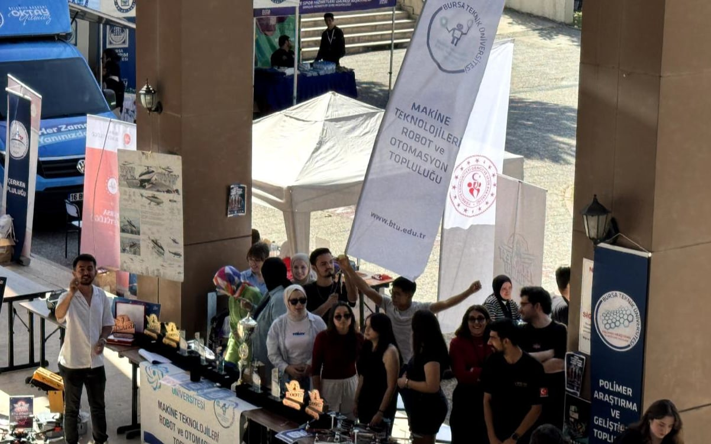
Kampüs etkinliklerinde tanıtım standı
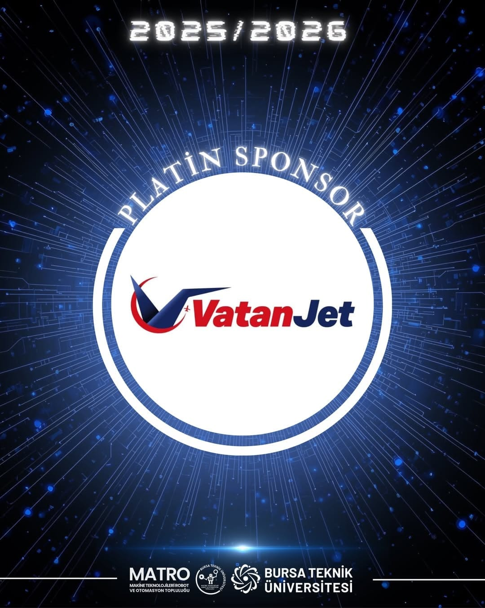
Sosyal medyada sponsor duyurusu
Süreç
Sponsorluk süreci nasıl işliyor?
Sponsorluk, Bursa Teknik Üniversitesi Rektörlüğü'ne sunulan resmî bir form ile kayda geçer. Formu, ilgili tüm belgeleri ve bağış hesabı bilgilerini görüşmemizin ardından size biz iletiyoruz.
1
Bizimle iletişime geçin
Sponsorluk ekibimize yazın. Markanızın hedeflerini ve destek vermek istediğiniz alanı birlikte belirleyelim.
2
Kademeyi birlikte belirleyelim
Vereceğiniz ayni ve nakdi desteğin tutarına göre platin, altın, gümüş veya bronz kademelerden birine karar verelim.
3
Resmî formu size iletelim
Üniversitemizin sponsorluk formunu ve bağış bilgilerini size gönderelim; süreci baştan sona birlikte yürütelim.
4
Logonuzu paylaşın
Logonuzun vektörel halini iletin; yarışma alanında, araçlarda ve tüm tanıtım görsellerinde doğru şekilde kullanılsın.
Sponsorluk ekibi
matroiletisim@gmail.com
Sponsorluk ekibimiz destek alanını ve kademeyi sizinle birlikte belirler; resmî form ve bağış bilgilerini görüşmenin ardından iletir.
btumatro.com/sponsorluk
Teşekkür
24 destekçi, tek atölye.
Projelerimizi hayata geçirmemizi mümkün kılan, geleceğin mühendislerine inanan tüm iş ortaklarımıza teşekkür ederiz.
DR. TABLETMERCAN BALIKÇILIKPOCKETBOOKOFF-EEKOMAGENE
Geçmiş dönemler
Bugüne kadar yanımızda olanlar
HKTM
ERMETAL
Epsan
BURGAB
Aquapol
Dijilkart
A.NET
Demo Marine
AkuaKare
YUMİ Mühendislik
Gelecek Evimde
YOSAB (Yenişehir Organize Sanayi Bölgesi)
2026–2027 hedeflerimiz
2026-2027 yarışma hedeflerimiz
2026-2027 döneminde yedi ayrı yarışma takımıyla ulusal ve uluslararası arenada üniversitemizi temsil etmeyi hedefliyoruz. Takım ön başvurularında bu kategoriler arasından en fazla üç tercih yapılabiliyor.
01İnsansız Kara Aracı
02İnsansız Su Altı
03İnsansız Deniz Aracı
04Hava Savunma Sistemleri
05Sanayide Dijital Teknolojiler
06Sürü İHA
07Serbest İHA
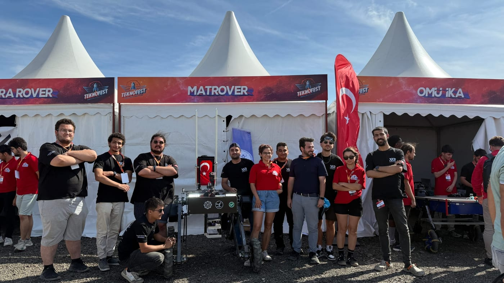
Davet
Bir sonraki sezonu birlikte kuralım.
Sponsorluk dosyamızın güncel hâlini ve takımlarımızın 2026–2027 hedeflerini içeren sunumumuzu sizinle paylaşmak için bir görüşme ayarlayalım.
Sponsorluk
matroiletisim@gmail.com
Web
btumatro.com
Sosyal medya
@btumatro · Instagram, LinkedIn, YouTube
Atölye
Özdemir Bayraktar TEKNOFEST Atölyesi
Adres
Bursa Teknik Üniversitesi, Mimar Sinan Yerleşkesi, Mimar Sinan Mah. Mimar Sinan Bulvarı Eflak Cad. No:177, 16310 Yıldırım / BURSA
Atölyede başlar. Sahada kanıtlanır.
Bursa Teknik Üniversitesi Makine Teknolojileri Robot ve Otomasyon Topluluğu btumatro.com